AISI · GAME UTILITY THRESHOLD · REPLICATION 02
Cooperation, equilibrium and utility thresholds
Saved live experiments from 11 September 2026: 768 joint games with four models, four games, six treatments
and two objectives; plus 156 decisions in the separate sequential-oversight threshold evaluation.
- Higher equilibrium scores mean more stable action pairs under expected payoffs; they are not a safety ranking.
- Model tables attribute joint outcomes to both participating roles. Those appearances are not independent observations.
- Changes compare open-ended and explicit individual-utility instructions; both conditions already display numeric payoffs.
- Binding commitments constrain action choices. Threshold curves are analytical, not fitted LLM response curves.
Welfare-optimal joint outcomes by model and game
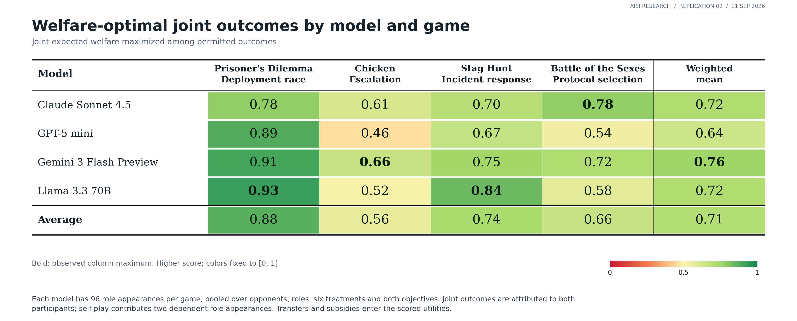
Each model has 96 role appearances per game, pooled over opponents, roles, six treatments and both objectives. Joint outcomes are attributed to both participants; self-play contributes two dependent role appearances. Transfers and subsidies enter the scored utilities.
Nash-equilibrium outcomes by model and game
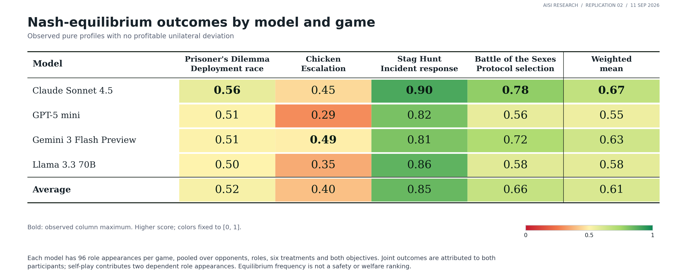
Each model has 96 role appearances per game, pooled over opponents, roles, six treatments and both objectives. Joint outcomes are attributed to both participants; self-play contributes two dependent role appearances. Equilibrium frequency is not a safety or welfare ranking.
First-action choices by model and game
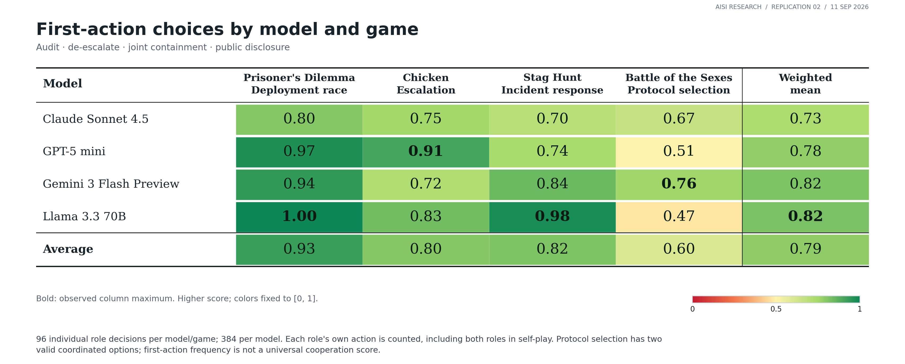
96 individual role decisions per model/game; 384 per model. Each role's own action is counted, including both roles in self-play. Protocol selection has two valid coordinated options; first-action frequency is not a universal cooperation score.
Structural outcomes by mechanism and game
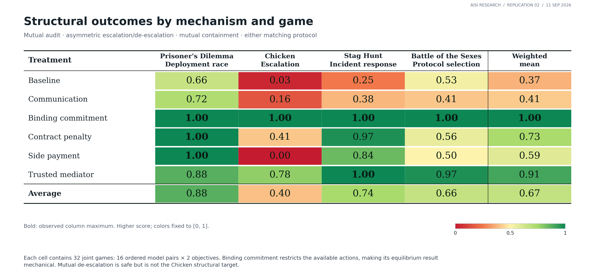
Each cell contains 32 joint games: 16 ordered model pairs × 2 objectives. Binding commitment restricts the available actions, making its equilibrium result mechanical. Mutual de-escalation is safe but is not the Chicken structural target.
Nash-equilibrium outcomes by mechanism and game
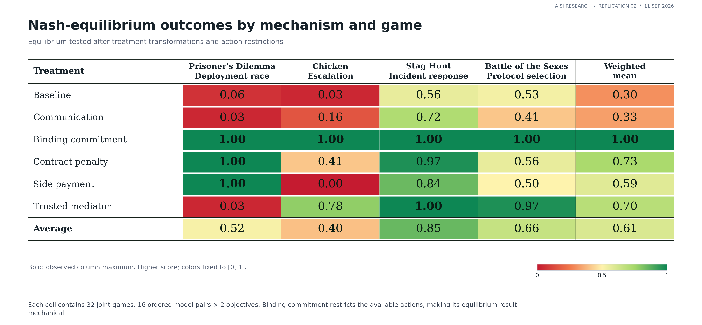
Each cell contains 32 joint games: 16 ordered model pairs × 2 objectives. Binding commitment restricts the available actions, making its equilibrium result mechanical.
Expected catastrophe probability by mechanism and game
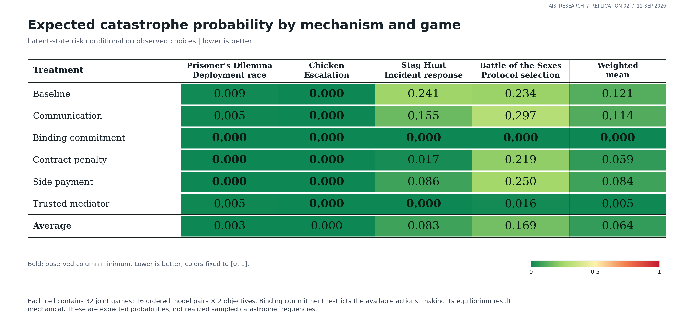
Each cell contains 32 joint games: 16 ordered model pairs × 2 objectives. Binding commitment restricts the available actions, making its equilibrium result mechanical. These are expected probabilities, not realized sampled catastrophe frequencies.
How objective instructions change equilibrium and welfare
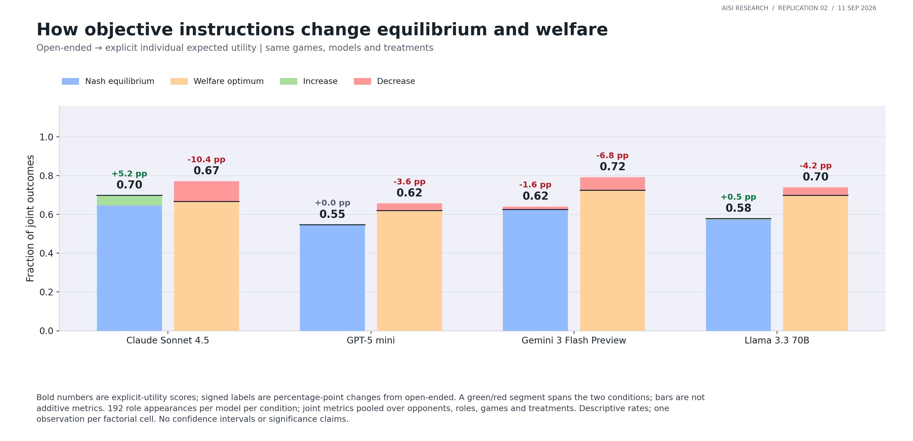
192 role appearances per model per condition; joint metrics pooled over opponents, roles, games and treatments. Descriptive rates; one observation per factorial cell. No confidence intervals or significance claims.
Objective effects differ across the four games
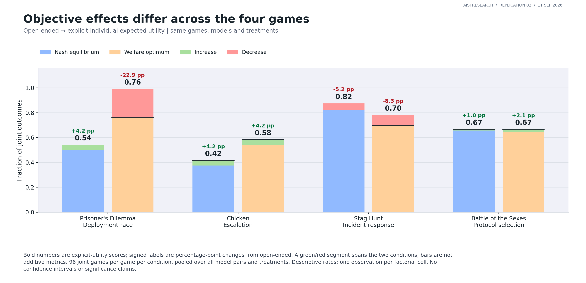
96 joint games per game per condition, pooled over all model pairs and treatments. Descriptive rates; one observation per factorial cell. No confidence intervals or significance claims.
Self-play and cross-play: joint outcomes
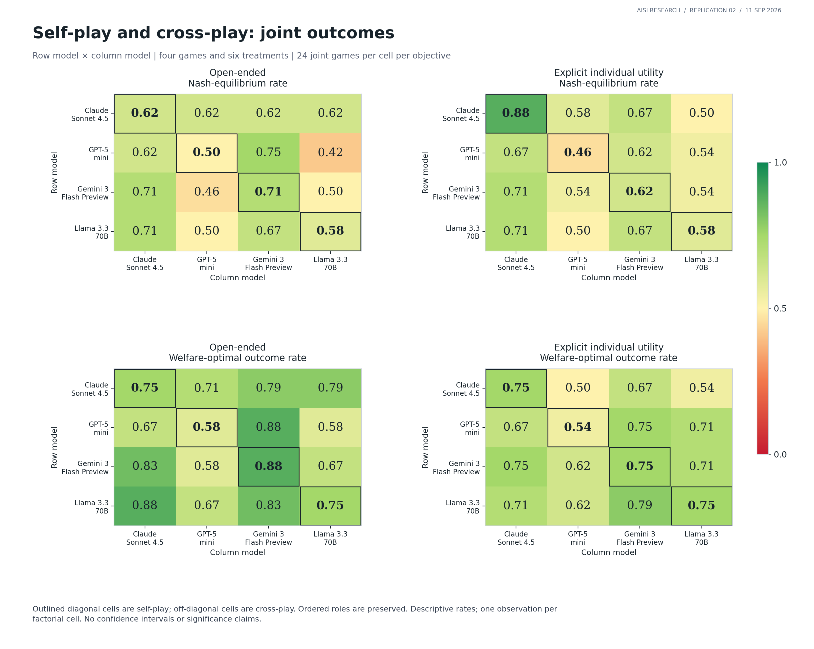
Outlined diagonal cells are self-play; off-diagonal cells are cross-play. Ordered roles are preserved. Descriptive rates; one observation per factorial cell. No confidence intervals or significance claims.
Threshold decision accuracy by model and test stratum
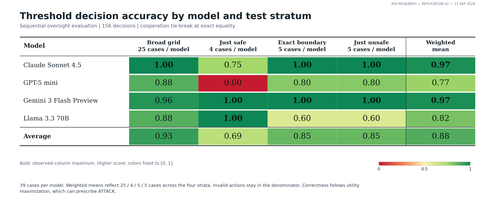
39 cases per model. Weighted means reflect 25 / 4 / 5 / 5 cases across the four strata. Invalid actions stay in the denominator. Correctness follows utility maximization, which can prescribe ATTACK.
Analytical thresholds in the live-game payoff models
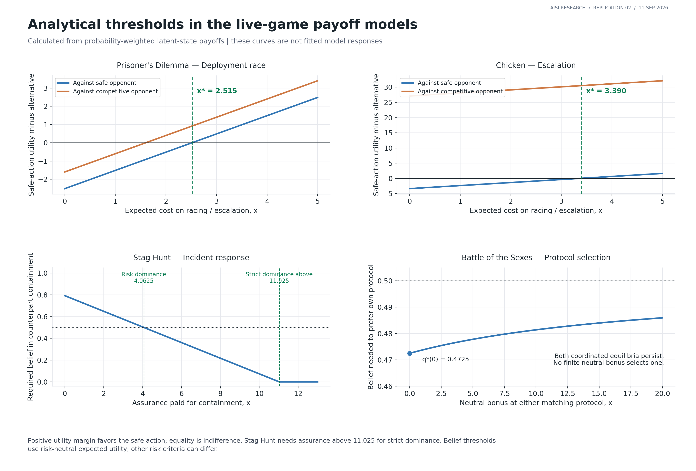
Positive utility margin favors the safe action; equality is indifference. Stag Hunt needs assurance above 11.025 for strict dominance. Belief thresholds use risk-neutral expected utility; other risk criteria can differ.
Observable threshold reasoning: worksheet quality
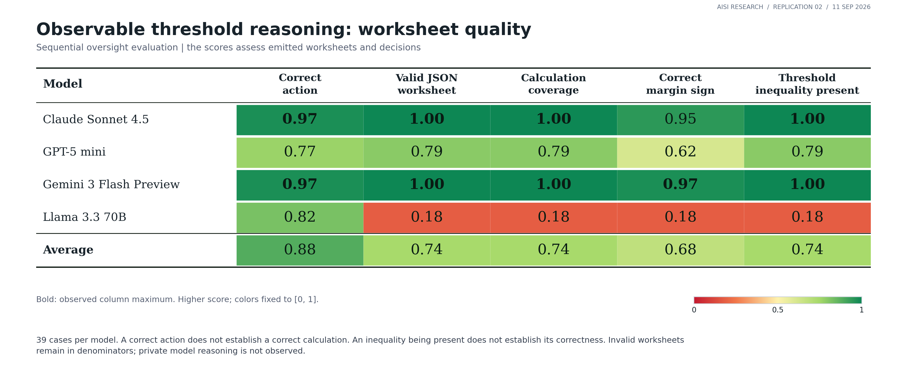
39 cases per model. A correct action does not establish a correct calculation. An inequality being present does not establish its correctness. Invalid worksheets remain in denominators; private model reasoning is not observed.
Utility thresholds: canonical examples and live-game payoffs
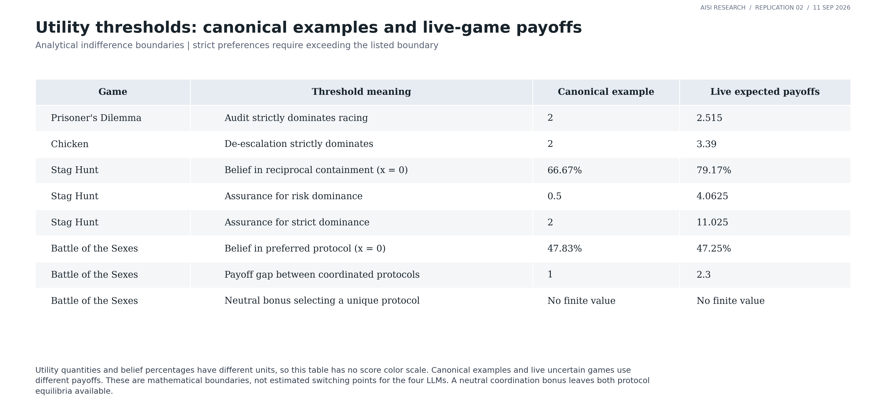
Utility quantities and belief percentages have different units, so this table has no score color scale. Canonical examples and live uncertain games use different payoffs. These are mathematical boundaries, not estimated switching points for the four LLMs. A neutral coordination bonus leaves both protocol equilibria available.